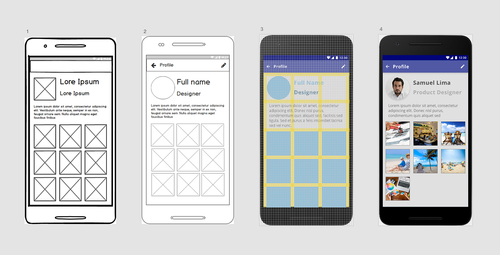

Módulo 5: Projeto Prático
Organize conteúdos e fluxos de navegação, desenvolva wireframes e protótipos, realize testes de usabilidade e aplique os conhecimentos em um projeto para seu portfólio.

Conteúdo Programático
Acompanhe as aulas correspondentes a este módulo.
-
Aula 1
Aula 1 - Arquitetura da Informação
Estruture sitemaps, taxonomias e lógicas de organização para garantir uma navegação lógica e descomplicada.
-
Aula 2
Aula 2 - Wireframes de Baixa Fidelidade
Desenvolva rabiscoframes ágeis para focar estritamente na hierarquia visual e funcionalidade dos elementos.
-
Aula 3
Aula 3 - Prototipagem Interativa
Dê vida às telas transformando estruturas estáticas em fluxos navegáveis ricos em interações.
-
Aula 4
Aula 4 - Testes de Usabilidade
Submeta o protótipo a avaliações diretas com usuários para registrar métricas de eficiência e pontos de melhoria.
-
Aula 5
Aula 5 - Considerações Finais do Projeto
Conclua as entregas finais, organize o case estruturado do projeto e prepare a documentação essencial para portfólio.